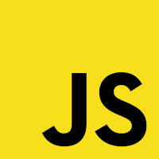
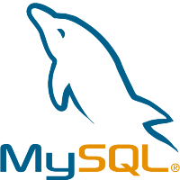

Ferramentas

.png)
Resumo de Qualificações
Atualmente estou me concentrando na área de desenvolvimento - backend, com ênfase na criação de aplicações na nuvem utilizando conhecimentos da AWS.
Como desenvolvedor de back-end, sou proficiente em várias tecnologias, como JavaScript, Node.js, Express, Typescript, ORM, ODM, MySQL, MongoDB, arquitetura MVC, JSON, Rest API, DDD, clean architecture, GIT e teste de unidade.
Entendo a infraestrutura global da AWS, os modelos de computação em nuvem, os principais serviços da AWS (EC2, S3, RDS, VPC) e outras soluções da AWS. Também tenho conhecimento de precificação em nuvem e gerenciamento de custos, práticas recomendadas de segurança e conformidade, programas de suporte da AWS e conhecimento de arquitetura, incluindo alta disponibilidade, escalabilidade e resiliência.

Conhecimentos
Back-end
JavaScript / Typescript
NodeJS / Express
ORM / ODM
API REST
MongoDB / MySQL
Testes Unitários
DDD
clean architecture
Formação
Acadêmica
Análise e desenvolvimento
De Sistemas
Técnologo 2022 - 2024
Conhecimentos
AWS
IAM
EC2
Lambda
Elastic Beanstalk
RDS
Route53
CloudFront
entre outros...